바이킹라인
스톡홀롬에서 헬싱키로 가는 크루즈 여행
오후 5시에 출발해서 다음날 아침 9시반에 도착
맛나게 저녁먹고 자구 일어나면 헬싱키!!! +_+
스톡홀롬에서 헬싱키로 가는 크루즈 여행
오후 5시에 출발해서 다음날 아침 9시반에 도착
맛나게 저녁먹고 자구 일어나면 헬싱키!!! +_+
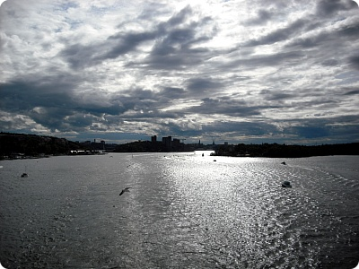
스톡홀롬에서 출발~
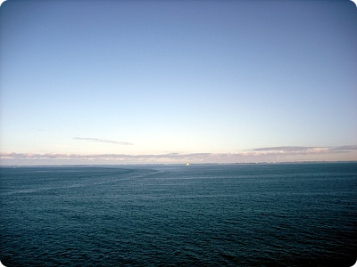
바다다~ 바다~~~ 이번에 정말 바다랑 항구는 실컷보았구나~+_+
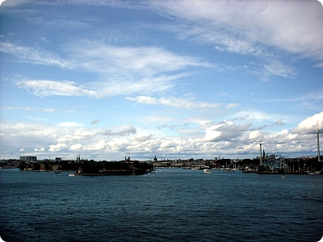
얜 뭐가 이리 당당해
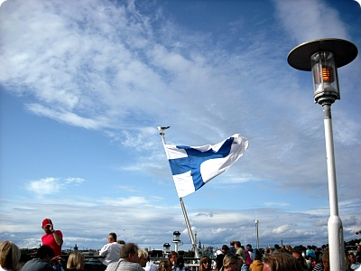
얜 뭐가 이리 당당해_002
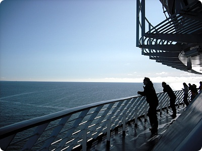
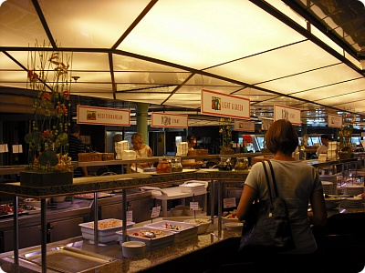
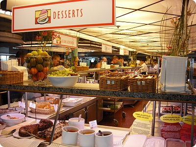
바이킹 라인에서 꼭 해야할것!!! - 이라던 '스뫼르고스보르드'라는 스웨덴식 부페!!! +_+
이리저리 배안 구경하고
위로 올라가서 바다보면서 엽사도 촘 찍다가(...;;)
식사시간 맞춰서 고고~
이리저리 배안 구경하고
위로 올라가서 바다보면서 엽사도 촘 찍다가(...;;)
식사시간 맞춰서 고고~
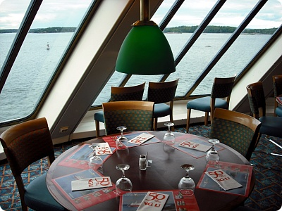
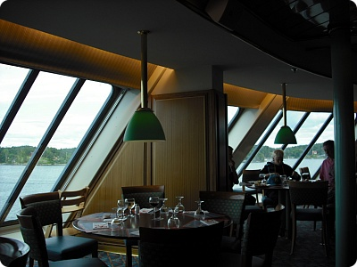
부페는 정말정말 최고에요 ㅜㅜ
밖으로는 바다가 보이고
음식은 맛나고/// 종류도 엄청 다양하고//
신선한 해산물이랑 생선요리도 잔뜩 +_+
밖으로는 바다가 보이고
음식은 맛나고/// 종류도 엄청 다양하고//
신선한 해산물이랑 생선요리도 잔뜩 +_+
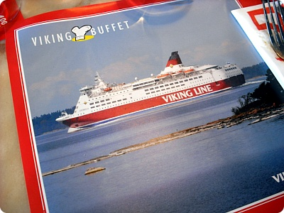
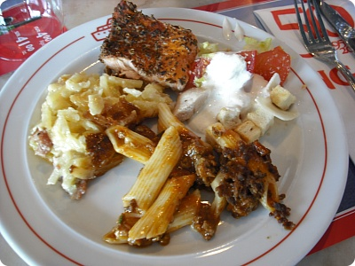
하지만 お子様 입맛은 여전함;;
연어구이랑 샐러드 파스타 감자 ^^;;;
연어구이랑 샐러드 파스타 감자 ^^;;;
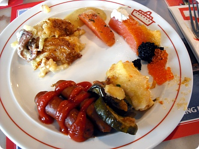
알 종류는 좋아해서 고루고루 집어온
캐비어 / 연어알 / 날치알
연어회(??) 랑 어김없이 소세지~(소세지 라븅//)
캐비어 / 연어알 / 날치알
연어회(??) 랑 어김없이 소세지~(소세지 라븅//)
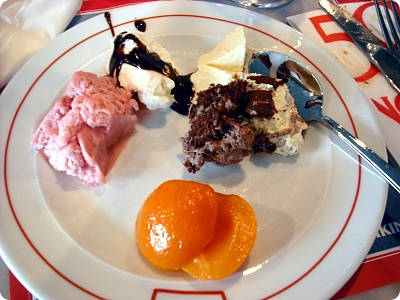
디저트 아슈크림
(난 가끔 이게 내 주식같아;;;;)
(난 가끔 이게 내 주식같아;;;;)
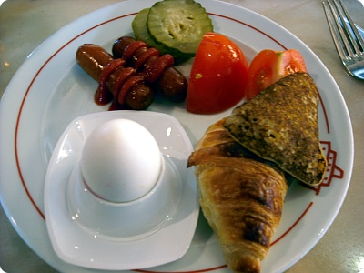
요건 그 다음날 아침에 먹은 아침식사
(또 소세지............;;;)
(또 소세지............;;;)
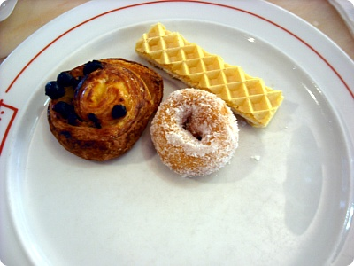
무엇보다 요게 대따 맛났어요
초코 콕콕 박혀있는 빵이랑 미니도넛!!!! +_+
아침에 커피랑 같이먹는데 완전 내취향///
한번 더 갔다먹었다능////
스웨덴 - 핀란드 이동하실때 바이킹라인 강추입니다 ㅜㅜ
부페가 넘 맘에들었어요///
초코 콕콕 박혀있는 빵이랑 미니도넛!!!! +_+
아침에 커피랑 같이먹는데 완전 내취향///
한번 더 갔다먹었다능////
스웨덴 - 핀란드 이동하실때 바이킹라인 강추입니다 ㅜㅜ
부페가 넘 맘에들었어요///